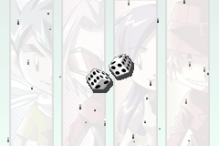

Dokodemo Taikyoku - Yakuman Advance (Japan) (Rev 1)
SRAM 256K
Cartridge Identity
- Game Code
AYAJ(FamilyAYA)- Header Title
YAKUMAN- Maker / Revision
01/ rev1- ROM Size
- 8.0 MiB (8,388,608 B)
- Save Media
SRAM 256K- SHA-256
ff26cf656403a5589d9e3ae6dc4efbd692e69febb9f19bfe3695f32662cfdbca- Engine / SDK Group
comm-002(145 families)
Screenshots

Observed Battery Save Layout
- Fill Byte & Active Size
0x00fill · 9,024–9,024 / 32,768 B active (entropy 0.00 bits/B)- Active Offset Ranges
0x5CC0–0x7FFF(1 total)- ASCII Magic / Headers
- None detected
- Observed Variable Regions
- 0 bytes across 0 spans: None
- Candidate Checksum/Counter Spans
- None
Hardware MMIO Subsystems
ppu_display0x8000330,0x80014a0,0x80014c0,0x8021a44,0x8048a38,0x804aaa4,0x804b238,0x804b2e8save_bus_sram_flash0x8055cc0
Regional Variants & Revisions (Family AYA)
- Dokodemo Taikyoku - Yakuman Advance (Japan) (
AYAJ, 8 MiB)